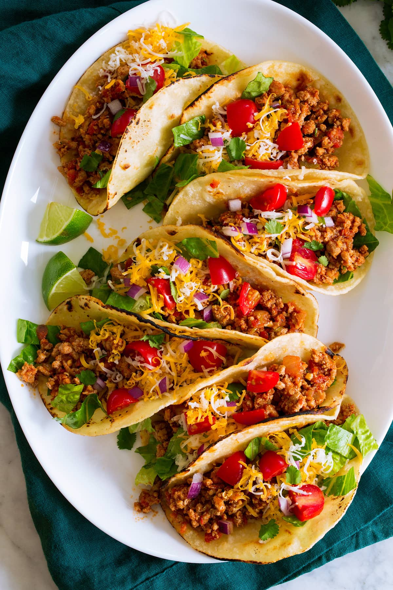

Description
Gobble gobble, turkey tacos!
Ingredients
- ½ pound ground turkey
- 1 (1 ounce) packet taco seasoning mix
- ½ cup chopped green bell pepper
- 4 cups mixed salad greens and fresh herbs
- 2 cups tortilla chips
- ½ cup shredded Mexican cheese blend
- ⅓ cup chopped onion
- ½ cup fresh salsa
- 1 tablespoon sour cream (Optional)
Directions
Step 1
Cook turkey in a skillet over medium heat until completely browned, 5 to 7 minutes; season with taco seasoning mix. Add green bell pepper; cook and stir until pepper is tender, about 5 minutes.
Step 2
Arrange salad greens onto 2 plates. Top greens with tortilla chips, cheese, and onion. Spoon turkey over the each salad. Top with salsa and sour cream.